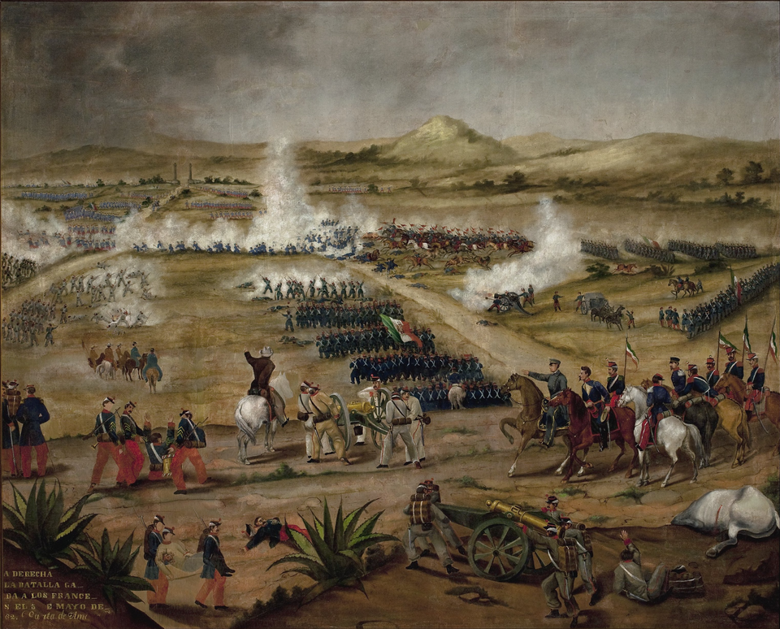

Zaragoza rechaza en Puebla al ejército francés
Tres veces asaltó el ejército de Lorencez los fuertes de Loreto y Guadalupe y tres veces fue rechazado bajo la lluvia. El general Ignacio Zaragoza, con cuatro mil quinientos hombres, detuvo al ejército considerado el primero del mundo.

Puebla amaneció bajo nubes y anochece en gloria. El ejército francés del conde de Lorencez, tenido por el primero del mundo, atacó hoy los cerros que guardan la ciudad y fue rechazado tres veces. Desde el mediodía, sus columnas subieron una y otra vez contra los fuertes de Loreto y Guadalupe, entre el humo de la fusilería y el estampido de los cañones; a media tarde una lluvia recia convirtió las laderas en lodazales, y la tercera embestida se deshizo como las anteriores. Al oscurecer, los franceses se replegaron hacia sus campamentos dejando el campo sembrado de muertos.
Manda la plaza el general Ignacio Zaragoza, un soldado de treinta y tres años, sereno y de pocas palabras, con unos cuatro mil quinientos hombres del Ejército de Oriente. A sus órdenes pelearon los generales Negrete, Berriozábal y Lamadrid, y la caballería del joven general Porfirio Díaz cargó sobre el flanco enemigo. Junto a la tropa de línea combatieron los indígenas serranos de Zacapoaxtla y Tetela, machete en mano, bajo la lluvia. Al cerrar la jornada, Zaragoza envió al gobierno un parte que ya corre de boca en boca: «Las armas nacionales se han cubierto de gloria».
La batalla de hoy viene de lejos. La república, arruinada por años de guerra civil, suspendió los pagos de su deuda, y tres potencias enviaron escuadras a Veracruz para cobrar. España e Inglaterra se retiraron tras los convenios de La Soledad; Francia no: el emperador Napoleón III quiere algo más que dinero, y sus agentes hablan de dar a México un trono y un príncipe extranjero. El presidente Juárez ha respondido con la ley y con la leva. Lorencez, confiado, habría escrito a París que era ya dueño de México; hoy los hechos le contestaron desde dos fuertes poblanos.
Los que bajan de los cerros cuentan la jornada con los ojos todavía encendidos. Hablan de los zuavos subiendo la cuesta con una bravura que los nuestros fueron los primeros en reconocer, y de los serranos que los esperaron a pie firme y los devolvieron ladera abajo. Hablan del joven general recorriendo la línea bajo el fuego, y de la lluvia providencial que mojó la pólvora y los ánimos del atacante. En la ciudad las campanas repicaron al anochecer; las mujeres salieron con café y vendas a recibir a los heridos, y los prisioneros franceses fueron tratados con una cortesía que honra.
Este diario no comete el error de creer terminada una guerra que apenas empieza: Francia es grande, su amo es tenaz y nadie sabe qué fuerzas enviará mañana. Pero lo de hoy no se borra: un ejército joven, mal vestido y peor pagado, de una república a la que muchos daban por muerta, detuvo al soldado más afamado del siglo. Los pueblos también viven de estas horas. Cinco de mayo: apúntese la fecha, que México habrá de recordarla. Y quede el parte de Zaragoza como epitafio de la jornada: las armas nacionales, hoy, se cubrieron de gloria.